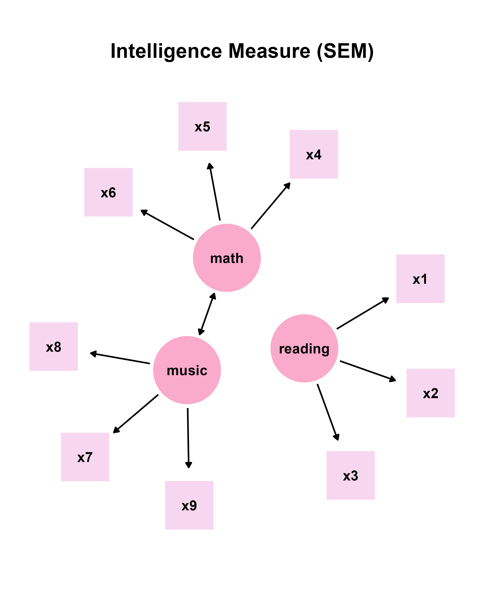

In this chapter, we will visualize structural equation modeling (SEM) diagrams.
The lavaan Package’s Syntax
In psychology, the lavaan package has been widely used for structural equation modeling (SEM) in R. It integrates methods such as factor analysis, regression models and path analysis into a coherent framework, allowing researchers to study how different variables are related to one another. Basically, models can be specified using strings in a particular syntax of the lavaan package.
# latent variable definitions
reading =~ x1 + x2 + x3
math =~ x4 + x5 + x6
music =~ x7 + x8 + x9
music ~~ mathIn this example, there are three latent variables
(reading, math and music) and
nine observed variables (x1 to x9). A latent
variable can be inferred from a set of data from other variables but not
directly observed. Usually, it captures an index that cannot easily be
measured or quantified.
The string =~ is a syntax from lavaan,
often used to define the relationship between latent and observed
variables. It can be translated as “is measured by” or “is indicated
by”. For instance, music =~ x7 + x8 + x9 means that the
latent variable music can be measured with the three
variables x7, x8, x9, such as the
sense of rhythm, reading ability in music scores, and aptitude in
learning to play a musical instrument. In other words, the
=~operator in lavaan denotes a one-way
direction. By convention, such as in the semPlot
package, a one-way arrow drawn from the latent variable to the observed
variable
Therefore, to translate the strings above, reading can
be measured by x1, x2 and x3
variables (ex. language), math can be measured by
x4, x5 and x6 variables, and
music can be measured by x7, x8
and x9 variables.
Additionally, the ~ operator indicates a causal
relationship from the independent variable to the dependent variable. It
is also a one-way relationship. For instance, if one’s stamina is very
high, then one’s running distance will be much longer.
Both ~ (regression) and =~ are shown as a
one-way arrow in SEM diagrams, and these are recognized by the
ggsem app in similar fashion as that in
semPlot.
‘~~’ refers to covariance, and ggsem plots it as a two-way arrow (straight rather than curved) just like in semPlot (curved).
Drawing lavaan input
Let’s run the app locally using the code below (faster than online: https://smin95.shinyapps.io/ggsem/):
ggsem::launch()
We can start by visualizing the SEM diagram using the strings:
# latent variable definitions
reading =~ x1 + x2 + x3
math =~ x4 + x5 + x6
music =~ x7 + x8 + x9
music ~~ mathThis string is already written down in the text area of Lavaan Syntax under the Lavaan Input menu. If readers want to supply their own models, then delete this sample string. Here are some important inputs for drawing a SEM diagram from a lavaan model.
Relative X Node Position: Relative horizontal spacing between points. The larger the distance, the larger the horizontal gap.
Relative Y Node Position: Relative vertical spacing between points. The larger the distance, the larger the vertical gap.
Line Endpoint Spacing: Spacing between a node and a edge’s endpoint.
Latent Variable Color: Color of the nodes that represent latent variables.
Observed Variable Color: Color of the nodes that represent observed variables.
Latent Variable Size: The size of the nodes that represent latent variables.
Observed Variable Size: The size of the nodes that represent observed variables.
Choose Layout Algorithms: Layout of the nodes and edges. The layouts are from the semPlot package. These include Tree, Circle, Spring, Tree2, Circle2 and Default.
We will adjust these inputs as:
Relative Node X Position: 20
Relative Node Y Position: 20
Line Endpoint Spacing: 4
Latent Variable Color: #FAAACB
Observed Variable Color: #F7D7EF
Latent Variable Size: 75
Observed Variable Size: 58
Choose Layout Algorithms: Spring
There are additional inputs that can be adjusted but these are not changed in this example.
After setting the inputs as specified, we can click the Draw SEM button (in the orange box), which creates new graphical outputs. The Apply Changes button (in the purple box) modifies the aesthetics of the existing graphical outputs that have been created from the Lavaan Input menu. So, if you wish to change the layout (from Spring to Tree) while keeping all other aesthetics unchanged, then you can simply change the layout in the Choose Layout Algorithms to Tree, and then click the Apply Changes button.
It is important to know that Apply Changes button modifies the aesthetics of graphical elements that have been created from the Lavaan Input menu but not from other menus. For example, if users create self-loop arrows later, these arrows will not be affected by the Apply Changes button from the Lavaan Input menu because these have not been produced together from the lavaan strings. To identify which components have been generated through lavaan, check the lavaan column in the output tables; if it is set to TRUE, then it is part of the lavaan output, and it is susceptible to the aesthetic changes brought by the Apply Changes button. For self-loop arrows, the lavaan column will be set to FALSE.
Readers can also explore with the rest of layout choices to see how layout affects the SEM diagram. Then, they can save the CSV outputs for points, lines and text annotations from the ggsem app. Also, if you are not satisfied with the current look of the SEM, you can also change numerical inputs in the table directly, such as the X and Y coordinates of the points, lines and texts.
Optional exercise: Readers can replace the straight two-way arrow with a curved two-way arrow between music and math by removing the straight two-way arrow via the Lines Table first, and then adding a curved two-way arrow under Line Elements.
Modifying the SEM Diagram from ggsem app in ggplot2 Workflow
library(tidyverse)
library(ggsem)
# CSV files from ggsem app
points_data <- read_csv("https://www.smin95.com/sem_points.csv")
lines_data <- read_csv("https://www.smin95.com/sem_lines.csv")
texts_data <- read_csv("https://www.smin95.com/sem_annotations.csv")
sem_plot <- csv_to_ggplot(
points_data = points_data,
lines_data = lines_data,
annotations_data = texts_data,
element_order = c("lines", "points", "annotations")
) # order priority: lines < points < texts
ggsave("sem_plot.png", sem_plot, width = 9, height = 9)
Next, we create some empty space, which can be included by increasing
the range of y-axis. First, we extract the x and y ranges using
get_axis_range() and then modify the y-axis range using
coord_cartesian().
get_axis_range(sem_plot)
#> $x_range
#> [1] -26.4 26.4
#>
#> $y_range
#> [1] -26.4 26.4
sem_plot2 <- sem_plot +
coord_cartesian(ylim = c(-26.4, 30))Now, we can add title using the function annotate(). It
is more convenient because it does not affect the scaling of the
figure’s components (unlike ggtitle()).
sem_plot2b <- sem_plot2 +
annotate("text",
label = "Intelligence Measure (SEM)", x = 0, y = 28, size = 7,
fontface = "bold"
)
ggsave("sem_plot2b.png", sem_plot2b, width = 7, height = 8)
Hacking the CSV Outputs from ggsem app
You can also modify the CSV outputs before converting them into a
ggplot object. Notice that font of the texts in the SEM diagram
is too faint, so we can bold it by directly replacing the
values in the fontface column of
texts_data
texts_data$fontface <- "bold"Then, we can recreate the figure again using
csv_to_ggplot().
sem_plot3 <- csv_to_ggplot(
points_data = points_data,
lines_data = lines_data,
annotations_data = texts_data,
element_order = c("lines", "points", "annotations")
) +
coord_cartesian(ylim = c(-26.4, 30)) +
annotate("text",
label = "Intelligence Measure (SEM)", x = 0, y = 28, size = 7,
fontface = "bold"
)
ggsave("sem_plot3.png", sem_plot3, width = 7, height = 8)
The modification of the SEM diagram with ggplot2
does not have to end here, however. I think the size of the latent
variable is a bit too small. I will increase it by modifying the CSV
file of points_data.
ggsem automatically assigns circle to latent variables and square to observed variables, as this is the standard in SEM diagrams. So, we can first identify the latent variables as rows in the data frame with circle points, and then modify their size.
which(points_data$shape == "circle") # three indices are row numbers for latent variables
#> [1] 10 11 12We save these indices and selectively increase the size of the points to 100.
latent_variable_index <- which(points_data$shape == "circle")
points_data[latent_variable_index, ]$size <- 100Then, we can recreate the figure with
csv_to_ggplot().
sem_plot4 <- csv_to_ggplot(
points_data = points_data,
lines_data = lines_data,
annotations_data = texts_data,
element_order = c("lines", "points", "annotations")
) +
coord_cartesian(ylim = c(-26.4, 30)) +
annotate("text",
label = "Intelligence Measure (SEM)", x = 0, y = 28, size = 7,
fontface = "bold"
)
ggsave("sem_plot4.png", sem_plot4, width = 7, height = 8)
In summary, the outputs from the ggsem app can be directly modified using a ggplot2 workflow, making each and every graphical element computationally reproducible. I personally prefer to get the general diagram out of the way using the app, and then modify the details using ggplot2 directly, as I have demonstrated above. But this might differ among different users.